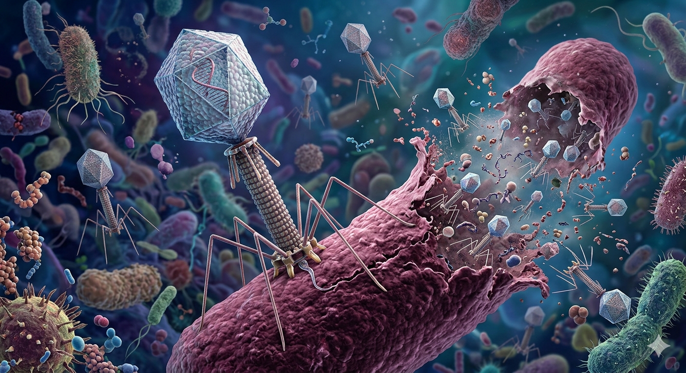

Imagine an agent so old it predates penicillin, so abundant its raw material is everywhere — in rivers, soil, sewage, even the ocean — and so specific it can eliminate a single bacterial species without disturbing anything else in your body. That agent exists. It is called bacteriophage, and during the last couple of decades, it has been back in the eye of scientists as a medical treatment.
The reason for that resurfaced interest is uncomfortable: we are running out of antibiotics. A growing number of bacterial species are becoming resistant to every drug we have. The World Health Organization lists antimicrobial resistance among the most serious global health threats of the twenty-first century, and projections suggest it could claim ten million lives per year by 2050 — more than cancer kills today. Against this backdrop, phages are no longer a curiosity. They are a serious medical option.
But what exactly is a bacteriophage?
A bacteriophage — from the Greek phagein, to eat — is a virus that infects bacteria. Phages are the most abundant biological entities on Earth: estimates put their number at around ten million trillion trillion (1031), outpacing every other organism by orders of magnitude. They are found wherever bacteria live, which means they are everywhere.
Like all viruses, phages are not independently alive. They are essentially a package of genetic material — DNA or RNA — wrapped in a protein coat. To replicate, they must hijack a host cell. The key distinction for medicine is what happens after infection.
Two life cycles
Lytic phages infect a bacterial cell, commandeer its machinery to produce copies of themselves, and then cause the cell to burst (lyse) — releasing new phages to infect more bacteria. This is the cycle exploited in therapy.
Lysogenic (temperate) phages integrate their genetic material into the host's genome and replicate quietly alongside it. They can potentially transfer genes between bacteria, including genes for antibiotic resistance, which makes them generally unsuitable for therapeutic use.
For therapy, the goal is always a strictly lytic phage: one that kills its bacterial target quickly and reliably, without hiding inside the genome or inadvertently helping bacteria acquire new traits.
A century-old idea
Phage therapy is not new. Its formal history begins in 1917, when Félix d'Herelle, a French-Canadian microbiologist, first described and named bacteriophages and began using them to treat bacterial infections in humans. The early reports were striking — phages appeared to cure dysentery, cholera, skin infections, and more. Enthusiasm ran high through the 1920s.
Then came antibiotics. When penicillin entered clinical use in the early 1940s, phage therapy research largely collapsed in Western countries. Antibiotics were easier to manufacture, easier to standardize, and backed by cleaner clinical evidence. Phages were seen as yesterday's solution to a problem that chemistry had now solved.
Except chemistry hadn't solved it permanently. In the Soviet Union and Eastern Europe — particularly in Georgia, Poland, and Russia — phage therapy continued to develop through the Cold War and beyond. The Eliava Institute in Tbilisi, founded in 1923, became one of the world's longest-running centers dedicated to phage-based medicine and remains active today. While this work was often conducted outside the rigorous trial frameworks that Western regulators came to demand, it produced a substantial body of experience that now informs modern research.
Why phages are having a renaissance
The emergence of multidrug-resistant bacteria — particularly the group known as ESKAPE pathogens — has forced medicine to reconsider every available option. These bacteria have acquired the ability to resist most or all available antibiotics, and new antibiotic development has slowed dramatically. The so-called "dry pipeline" in pharmaceutical R&D leaves clinicians with fewer tools each year.
— Gordillo Altamirano & Barr, Clinical Microbiology Reviews, 2019
A 2019 systematic review in Clinical Infectious Diseases analyzed 30 clinical studies involving over 1,150 patients treated with phages against ESKAPE pathogens. The results were encouraging: 87% of studies showed phage efficacy in reducing or eliminating bacterial infections, and 67% reported no adverse effects related to the phage preparation itself. No study associated phage treatment with patient deaths. These are not the numbers of a failed approach — they are the numbers of an underinvested one.
What makes phages different from antibiotics?
The comparison is worth making carefully, because phages and antibiotics are profoundly different tools. Understanding those differences is key to understanding both their promise and their limitations.
Key differences: phages vs. antibiotics
| Property | Phages | Antibiotics |
|---|---|---|
| Mechanism | Biological — infect and lyse bacteria | Chemical — disrupt bacterial processes |
| Specificity | Highly specific — targets one or few bacterial species | Broad spectrum — kills many species including microbiome |
| Self-amplification | Yes — replicates at the infection site | No — fixed dose only |
| Resistance evolution | Bacteria can become resistant — but phages co-evolve | Bacteria become resistant — antibiotics cannot adapt |
| Microbiome impact | Minimal — spares non-target bacteria | Significant — broad disruption of gut and skin flora |
| Clinical evidence | Growing — but still limited controlled trials | Extensive — decades of rigorous clinical data |
The specificity of phages is simultaneously their greatest advantage and their most significant practical challenge. Because a phage targets only a narrow range of bacteria, treatment requires accurate identification of the pathogen causing the infection — sometimes down to the strain level. That diagnostic step takes time, and time matters enormously in severe infections. It also means that a single phage preparation will not work for everyone with the same disease: two patients with Pseudomonas aeruginosa pneumonia might need different phage cocktails if their bacterial strains differ.
How phages are isolated from the environment
One of the most practically important aspects of phage therapy is the process of finding the right phage in the first place. Phages must be isolated from natural environments — and this is where the biology becomes fascinating.
Sewage is, counterintuitively, one of the richest sources of therapeutic phages. Because sewage contains high concentrations of human pathogens, it also contains high concentrations of the phages that prey on them. Researchers can find phages targeting ESKAPE pathogens in wastewater effluents, river water, hospital drains, and soil. The isolation process typically involves filtering a water or soil sample, mixing it with the target bacteria in culture, and looking for plaques — clear zones in the bacterial lawn where phage activity has killed the cells.
More advanced methods include ultrafiltration (which physically retains phage particles from large volumes of water), adsorption-elution techniques (which exploit the natural charge of phage particles to capture and release them from filter matrices), and enrichment culture (the simplest and most widely used method, in which target bacteria are added to a pre-filtered environmental sample to amplify any phages present). Once isolated, candidate phages are characterized genetically — researchers confirm they are strictly lytic, carry no antibiotic resistance genes, and have a suitable host range before any therapeutic consideration.
The cutting edge: beyond conventional therapy
Modern phage therapy is not just about administering a phage and hoping for the best. Several innovative approaches are expanding what phages can do.
Phage-antibiotic synergy (PAS) is among the most clinically promising. It turns out that sub-lethal concentrations of certain antibiotics — particularly beta-lactams and quinolones — can actually increase bacterial production of lytic phages. The antibiotic inhibits cell division without killing the cell, which gives the phage more time and resources to replicate and ultimately destroy the bacterium. This synergy has been demonstrated against multiple ESKAPE pathogens and suggests that phage therapy is not a replacement for antibiotics but a powerful complement.
Exploitation of evolutionary trade-offs is perhaps the most conceptually elegant approach. When bacteria evolve resistance to a phage, they often pay a biological cost — reduced growth rate, impaired virulence, or, in a remarkable series of experiments with Pseudomonas aeruginosa, the loss of efflux pumps that happen to also be responsible for antibiotic resistance. In other words, some bacteria become phage-resistant by becoming antibiotic-sensitive. Clinicians can design treatment sequences that intentionally drive bacteria toward that outcome, using the phage as an evolutionary steering mechanism.
Phage bioengineering opens further possibilities: expanding a phage's host range, engineering phages to deliver antimicrobial payloads directly inside bacterial cells, or using phage-encoded enzymes (endolysins) as standalone antibacterial agents. Endolysins — the proteins phages use to rupture bacterial cell walls — have shown particular promise against Gram-positive pathogens like Staphylococcus aureus, including methicillin-resistant strains (MRSA).
From compassionate use to clinical trials
The modern era of human phage therapy began in earnest with a landmark 2017 case: a 68-year-old diabetic man in the United States with a life-threatening, drug-resistant Acinetobacter baumannii infection that had stopped responding to every available antibiotic. With no remaining options, his physicians obtained emergency permission to use an experimental phage cocktail. The infection cleared. The patient survived. This was the first documented case of successful intravenous phage therapy against a systemic multidrug-resistant infection in the United States, and it catalyzed a wave of renewed research interest.
Formal clinical trials have followed. The Phagoburn trial (2015–2017) assessed phage cocktail treatment of burn wound infections by Pseudomonas aeruginosa — the first trial conducted under full Good Manufacturing Practice and Good Clinical Practice standards. Results were mixed but instructive: phage preparations degraded in titer after manufacturing, leading to lower-than-intended doses. The science worked; the manufacturing pipeline needed refinement.
What still needs to be solved
For all its promise, phage therapy faces real, unsolved problems. The body's immune system can recognize and neutralize phages, potentially reducing treatment effectiveness — though clinical data suggest this is less of a problem than initially feared, and no cases of phage-induced anaphylaxis have been reported in modern trials. Phage resistance can emerge quickly during treatment, requiring sequential administration of different phage cocktails to stay ahead of bacterial evolution.
Regulatory pathways remain underdeveloped in most Western countries. Phages are not chemicals with fixed compositions — they are living biological entities that must be tailored to individual patients. Standard drug approval frameworks, designed for small molecules, struggle to accommodate treatments that need to be updated whenever the target bacterium evolves. Belgium has pioneered a promising approach: classifying personalized phage preparations as "magistral" (compounded) medicines, which allows faster clinical access while maintaining safety standards. This model is being watched closely by regulators elsewhere.
The manufacturing and distribution infrastructure for phage therapy is also nascent. Phage banks — curated libraries of characterized, therapeutically promising phages ready to be screened against a patient's bacterial isolate — are being developed at research institutions worldwide and will be critical for making therapy accessible at scale.
Why this matters beyond the clinic
Phage therapy is more than a medical story. It is a story about what happens when a promising scientific idea is abandoned because something more convenient comes along — and what it costs to rediscover it decades later. The Eastern European countries that never stopped working on phages are now, in some ways, ahead of the West in clinical experience, even though their older data lacks the methodological rigor that modern regulatory agencies require.
It is also a story with particular relevance for countries like Ecuador. Antimicrobial resistance is a global problem, but its consequences are not felt equally. In settings with limited access to the most expensive antibiotics — the last-line drugs reserved for drug-resistant infections — the need for alternatives is more urgent, not less. Phage therapy, if developed into a scalable, accessible treatment, could represent a meaningful option for contexts where the pharmaceutical pipeline has little economic incentive to deliver new antibiotics.
We are not there yet. But the science is advancing. The clinical data, while still limited, is growing more rigorous. And the bacterial threat is not waiting for the regulatory landscape to catch up.
Sources
- Gordillo Altamirano, F. L., & Barr, J. J. (2019). Phage therapy in the postantibiotic era. Clinical Microbiology Reviews, 32(2), e00066-18.
- El Haddad, L., Harb, C. P., Gebara, M. A., Stibich, M. A., & Chemaly, R. F. (2019). A systematic and critical review of bacteriophage therapy against multidrug-resistant ESKAPE organisms in humans. Clinical Infectious Diseases, 69(1), 167–178.
- Nair, A., Ghugare, G. S., & Khairnar, K. (2021). An appraisal of bacteriophage isolation techniques from environment. Microbial Ecology. https://doi.org/10.1007/s00248-021-01782-z